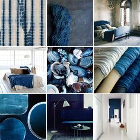
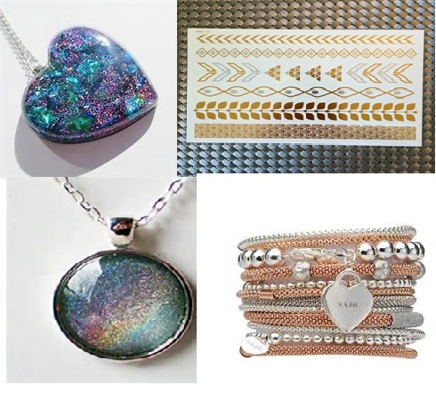

Hi! I'm Unique4ever and welcome to my Fashion Blog!
This is a place for people that love fashion, like me.
Let's face it, not all of us can afford the life of a Kardashian.
So, that's why I'm here to show you some SUPER pocket friendly DIYs.
As well as great (at least that's what I like to think of them as) fashion tips.
I'm sharing these tips in hope that these come in handy if your intrest in fashion is very recent
or if you're in need of some inspiration.
I really want to tell everyone about myself, but i honestly think think that it would be much better to stay anonynous.
I hope all of my writing comes in handy and for all you know i might just reveal myself someday.
Here's a few moodboards that are very much my style, and they might help you understand my style.
 As you can see that my style is very much full of metallics, blues
and I know that I didn't mention it but i do like a pop of colour once in a while.
I know people dont read or at least keep up with blogs that much anymore,
but i feel like they are much easier to follow along with. Also a great way to stay anonymous.